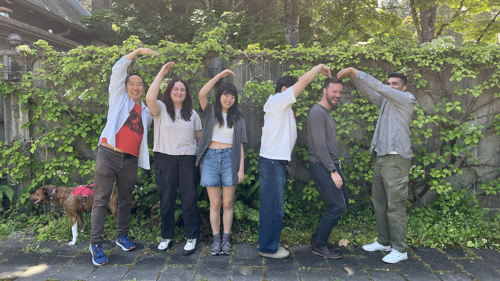

<div class='container'>
  <header class="masthead text-center">
    <!-- Main Header Image -->
     

    <!-- Welcome Text -->
    <p>
      <b><font size="+1">Welcome to the Computation, Cognition, and Movement (CCM) Lab at The University of British Columbia! We are a research group studying human motor learning.</font></b>

      <blockquote style="font-style: italic; font-size: 1.1em; margin-top: 1em;">
        the human body<br>
        moves with purpose, ease and grace<br>
        how does it do so?
      </blockquote>

      <span style="display: block; margin-bottom: 3em"></span>

      <a href="https://github.com/ccmlab-ubc"><i class="fa fa-github"></i> CCM Lab</a>&nbsp;&nbsp;&nbsp;
      <a href="mailto:hyosub.kim@ubc.ca"><i class="fa fa-envelope-o"></i> hyosub.kim@ubc.ca</a>
    </p>

    <!-- Slideshow Gallery -->
    <div class="slideshow-container" style="max-width: 800px; margin: auto; position: relative;">

      <div class="mySlides fade">
        
      </div>

      <div class="mySlides fade">
        
      </div>

      <div class="mySlides fade">
        
      </div>

    </div>

    <style>
    .slideshow-container {
      position: relative;
      max-width: 100%;
      margin: auto;
    }

    .mySlides {
      display: none;
      position: relative;
      width: 100%;
    }

    .fade {
      animation-name: fade;
      animation-duration: 1s;
    }

    @keyframes fade {
      from { opacity: 0.4; } 
      to { opacity: 1; }
    }
    </style>

    <script>
    document.addEventListener("DOMContentLoaded", function() {
      let slideIndex = 0;
      const slides = document.getElementsByClassName("mySlides");

      function showSlides() {
        for (let i = 0; i < slides.length; i++) {
          slides[i].style.display = "none";  
        }
        slideIndex++;
        if (slideIndex > slides.length) { slideIndex = 1; }
        slides[slideIndex - 1].style.display = "block";
        setTimeout(showSlides, 3000); // Change image every 3 seconds
      }

      showSlides();
    });
    </script>


    <!-- Recent News -->
    <div class="w3-container" style="background: #f0f8ff; padding: 25px; border-radius:10px; border: 1px solid #5d8aa8">
      <div style="text-align:left">
        <h3> Recent News </h3>
        <span style="display: block; margin-bottom: 1em"></span>
        <div class="news">
          {% capture now %}{{'now' | date: '%s' | minus: 31104000 %}}{% endcapture %}
          <ul style="list-style-position:outside;padding:20px">
            {% for new in site.data.news %}
              {% capture date %}{{new.date | date: '%s' | plus: 0 %}}{% endcapture %}
              {% if date > now %}
                <li>
                  <span>{{ new.details }}</span>
                </li><br>
              {% endif %}
            {% endfor %}
          </ul>
        </div>
      </div>
    </div>

    <span style="display: block; margin-bottom: 3em"></span>

    <!-- Acknowledgments -->
    <div style="text-align: left; background: #f9f9f9; padding: 20px; border-radius: 8px; border: 1px solid #ccc;">
      <h3>Acknowledgments</h3>
      <p>
        We acknowledge the Natural Sciences and Engineering Research Council of Canada (NSERC), the Canada Foundation for Innovation (CFI), and the B.C. government for their generous support. 
      </p>
    
      <!-- Logos Row -->
      <div style="display: flex; justify-content: center; align-items: center; gap: 50px; flex-wrap: wrap; margin-top: 20px;">
        
        
      </div>
    </div>

    <span style="display: block; margin-bottom: 3em"></span>

    <!-- Footer -->
    School of Kinesiology at The University of British Columbia<br>
    Vancouver, BC<br>
    <small><small>(Powered by <a href="http://jekyllrb.com/">Jekyll</a> with <a href="https://github.com/KordingLab/KordingLab.github.io">Kording Lab's</a> template. Photo courtesy of <a href="https://www.flickr.com/photos/ubcpublicaffairs/11970021376">UBC</a>.</small></small>)

    <span style="display: block; margin-bottom: 3em"></span>
  </header>
</div>

